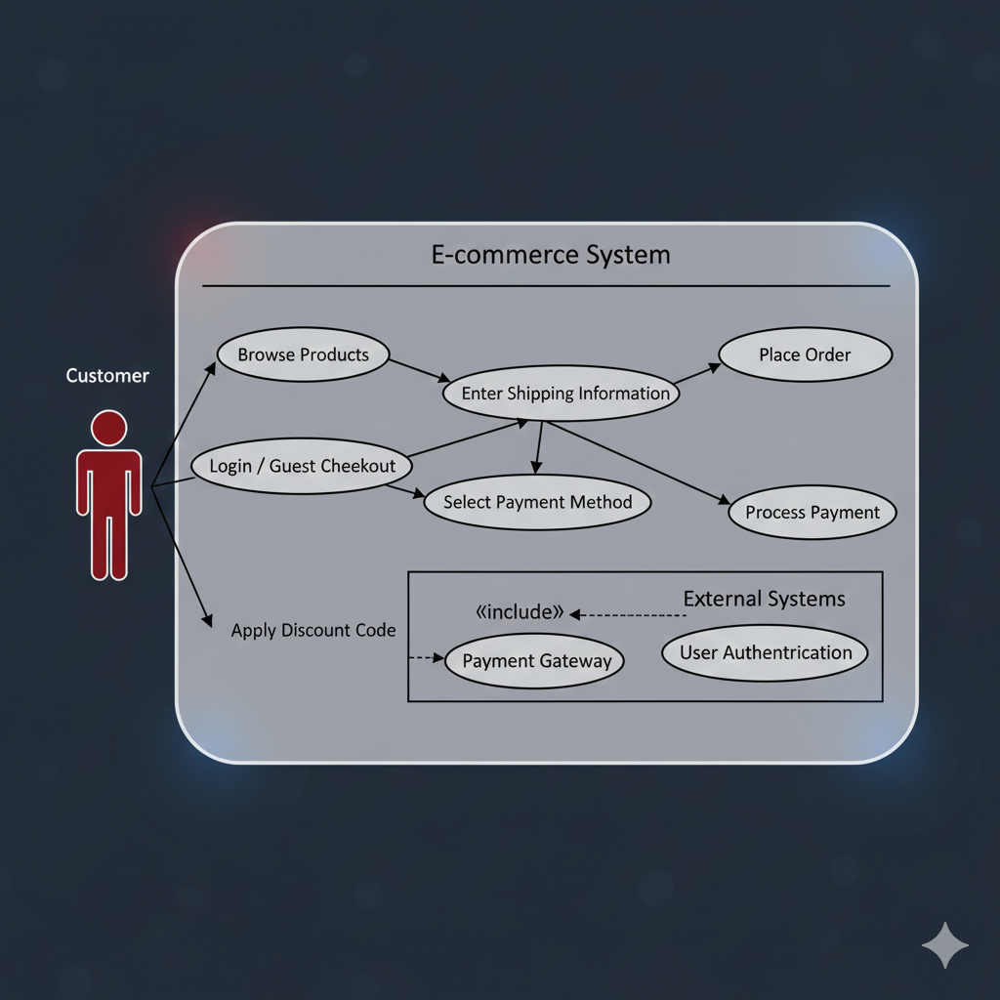
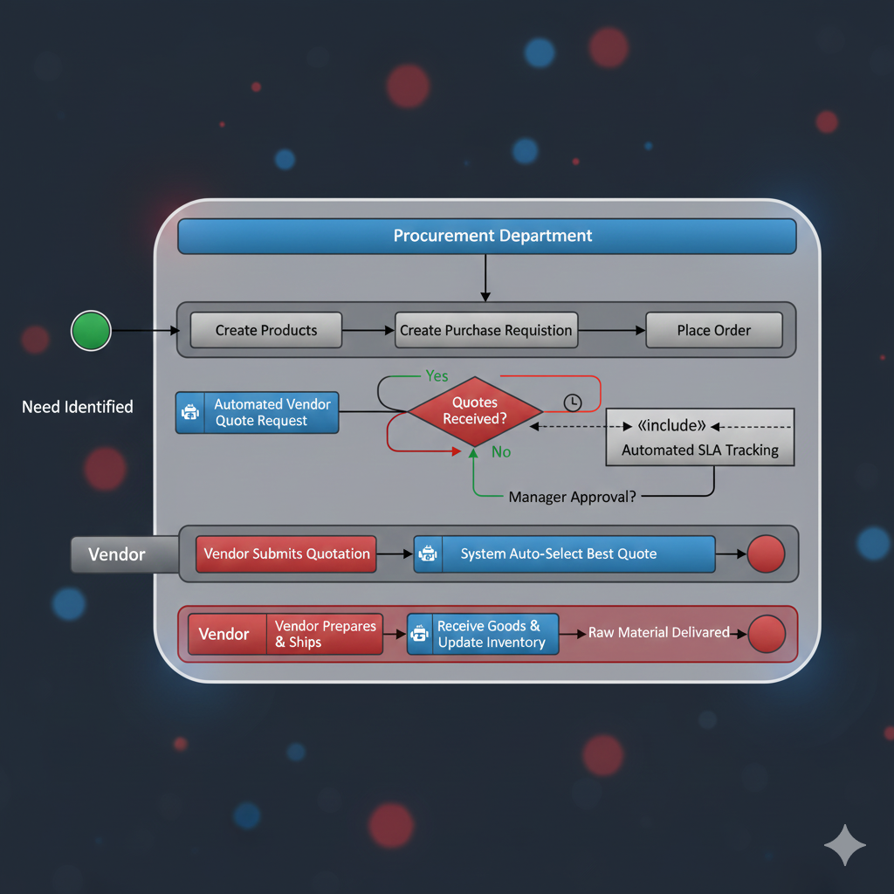

I specialize in **driving non-code-intensive solutions** that maximize efficiency and decision quality. My expertise lies in the full Business Intelligence lifecycle—from gathering high-impact requirements to deploying robust, user-friendly dashboards. I leverage modern analytical tools including **Tableau, Power BI, Excel, and advanced AI platforms** to surface actionable insights and deliver measurable value. My commitment is to bridge the gap between business needs and data execution, consistently achieving top-tier outcomes in project management and data analysis.
Documented the "Place Order" process flow using a **Use Case Diagram** to visualize actor (Customer, Payment Gateway) interactions and system boundaries.
Use Case Diagram
*Conceptual Use Case Diagram showing Checkout, Payment, and Authentication steps.*
Managed the implementation team through validation, ensuring the solution met the core requirement: **reduce clicks to purchase by 30%**.
Designed the "To-Be" process, automating the vendor quotation and approval steps via a Power Automate workflow. The flowchart clearly defined the transition points and decision nodes in the optimized supply chain.
BPMN Flowchart
*Conceptual Flowchart showing the To-Be, automated Procurement Process.*
The solution was deployed across the procurement department, minimizing human intervention and providing automated SLA tracking.
JPMorgan Job Simulation
Siemens Project Manager Simulation
Microsoft Business Central
Microsoft Fabric
Power BI Copilot
ICAT Aptitude Test
LinkedIn Analytics Skills
I am actively seeking Business Analyst and Data roles. Reach out to discuss how I can drive value for your team.